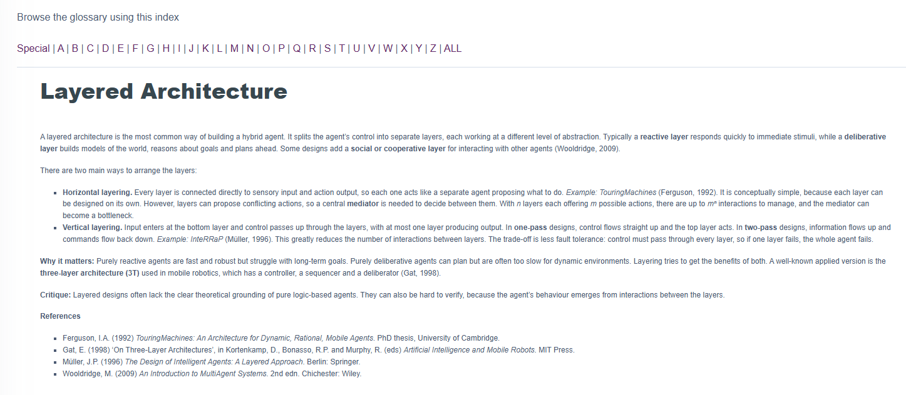
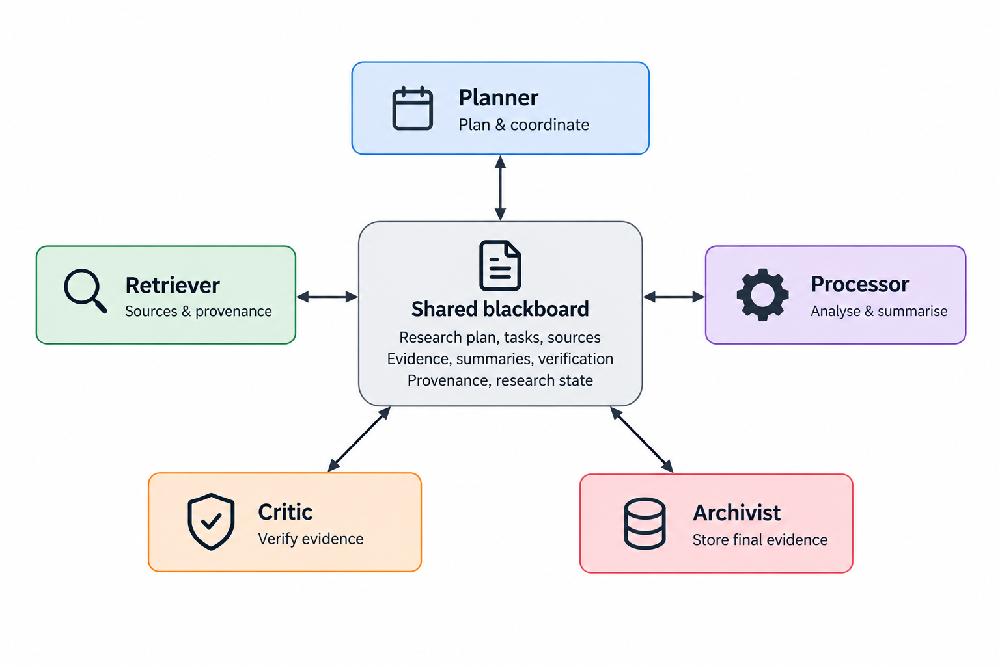
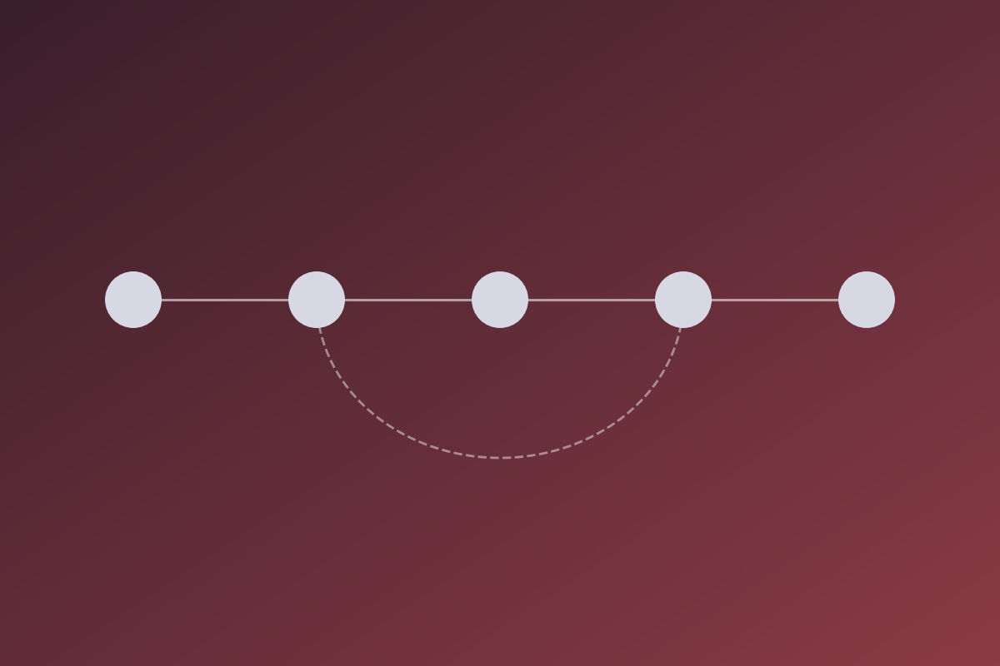
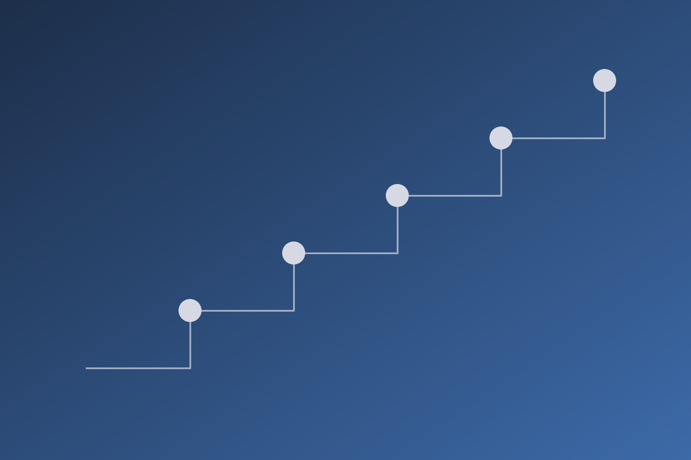
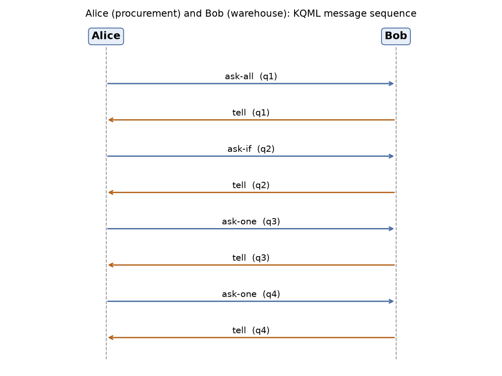

Learning Artefacts
Units 1–12: discussions, wiki, exercises and reflections

Units 1–12: discussions, wiki, exercises and reflections

ScholarPlan design proposal (Unit 6), my contribution and team log

ScholarPlan implementation (Unit 11) and critical evaluation against the design
AI safety constraints, explainable decisions and bias

Learning outcomes, feedback, skills matrix and development plan

All sources cited across the portfolio
This e-portfolio collects my work on the Intelligent Agents module (IA_PCOM7E, July 2026 cohort). Learning Artefacts holds my unit activities with short reflections written using Rolfe et al.'s (2001) What? So what? Now what? framework. Team Project and Individual Project cover the two assessed deliverables, which designed and then built ScholarPlan, an LLM-powered planning agent for academic research. Case Studies holds three reflective case studies grounded in that system. Professional Development maps the evidence to the module learning outcomes and holds my skills matrix and development plan. All twelve units are included.
Rolfe, G., Freshwater, D. & Jasper, M. (2001) Critical Reflection in Nursing and the Helping Professions: A User's Guide. Basingstoke: Palgrave Macmillan.